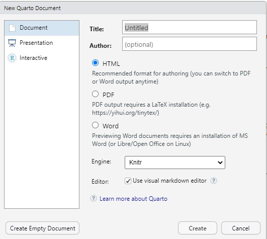
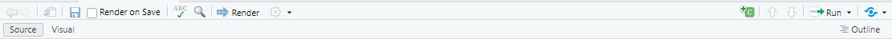

Die Logik von Markdown und Quarto

Wir können in R-Studio unterschiedliche Arten von Dokumenten nutzen. In diesem Kurs nutzen wir hauptsächlich R Quarto. Im folgenden Kapitel gehen wir auf die wichtigsten Funktionsweisen von Quarto ein.
1 R Markdown und Quarto
In diesem Kurs verwenden wir R Markdown bzw. R Quarto Dokumente. Diese haben den Vorteil, dass wir innerhalb eines Dokumentes Codeteile (sogenannte Code Chunks) und Text kombinieren können. Dies erlaubt die Dokumentation und Reproduzierbarkeit statistischer Auswertungen.
Bei Quarto handelt es sich im Prinzip um die neuere Variante von RMarkdown Dokumenten. Diese beinhalten alle Funktionalitäten von Markdown-Dokumenten (sind genauso aufgebaut und lassen sich normal rendern), aber bieten zusätzlich die Möglichkeit weitere Programmiersprachen (wie Python, Julia und Javascript) und interaktive Elemente (Widgets und Shiny-Anwendungen). Markdown-Dokumente weisen die Endung .rmd auf wohingegen Quarto-Dokumente den Endung .qmd haben. Beide Dokumenttypen können für unseren Kurszweck gleichwertig genutzt werden. Lediglich bei der Arbeit mit interaktiven, multimedialen oder mehrsprachigen Dokumenten ist Quarto besser geeignet als Markdown.
2 Installation der Programme
Markdown kann innerhalb von R mit dem Befehl install.packages("Rmarkdown") installiert und anschließend geladen werden. Da es sich bei Quarto nicht um ein Package, sondern ein eigenes Interface handelt, muss das Programm extern heruntergeladen und auf dem Rechner installiert werden.
3 Bestehende Dokument laden
Zum Laden eines Quarto- oder Markdown Dokumentes könnt ihr dieses einfach auf eurem Rechner doppelklicken. Wahlweise könnt ihr auch über File -> Open File (oder Strg + O) innerhalb von RStudio ein Dokument öffnen.
4 Neue Dokumente anlegen
Um ein neues Dokument anzulegen, könnt ihr einfach über File -> New File das gewünschte Dokument anlegen. Sowohl bei Markdown, als auch bei Quarto öffnet sich dann das Folgende Fenster:

Dort könnt ihr euer Dokument benennen (Title), die Autoren festlegen (Author) sowie das Output-Format (HTML, PDF oder WORD) festlegen. Zudem könnt ihr bei Quarto angeben, wie ist das Dokument gerendert werden soll (Knitr vs. Jupyter). Hier könnt ihr die Auswahl auf Knitr belassen. Zuletzt könnt ihr festlegen, ob ihr den visual markdown editor oder den source editor nutzen möchtet. All diese Punkte könnt ihr jedoch auch noch nachfolgend im YAML-Header oder im Menü) ändern.
5 Übergreifende Menüpunkte
Unterhalb der allgemeinen RStudio-Menüleiste findet ihr eine eigene Markdown und Quarto-Dokumentleiste:

Hier könnt ihr euer Dokument speichern (Diskettensymbol), in eurem Dokument suchen und ersetzen (Lupensymbol) oder euer Dokument Rendern (Quarto) oder Knitten (Markdown). Hiermit rendert ihr euer Dokument von R in euer gewünschtes Outputformat (Word, Pdf, oder Html). Zusätzlich könnt ihr mit dem Zahnrad Optionen für den Umgang mit dem gerenderten Dokument und den Codechunks festlegen. Zusätzlich könnt ihr hier neue Codechunks anlegen (+C-Symbol auf der rechten Seite) oder die bestehenden Code-Chunks ausführen (Run-Symbol)
6 Überblick über die Dokumentkomponenten
Sowohl Markdown, als auch Quarto-Dokumente bestehen aus drei Bestandteilen: dem YAML-Header, Textbereichen und Codebereichen.
6.1 YAML-Header
Innerhalb des YAML Headers, welcher jeweils von --- umgeben ist, legen wir die Dokumentstruktur fest.

Dies beinhaltet beispielsweise den Titel des Dokumentes title:, die Autoren author, sowie Spezifikationen zur Dokumentstruktur, wie beispielsweise das Outputformat format: oder auch in Quarto Spezifikationen zum Umgang mit den Codechunks execute: echo : true auf Gesamtdokumentebene.
6.2 Text
In Markdown und Quarto-Dokumenten können wir Text einbinden und diesen beliebig formatieren. Dazu können wir wahlweise die Source-Variante oder die Visual-Variante nutzen. In der Source-Variante variieren wir Text mittels Syntax. Typische Syntaxbefehle sind:
- *kursiv*: jeweils einen Stern vor und nach einem Wort um dieses kursiv zu schreiben
- **fett**: jeweils zwei Sterne vor und nach einem Wort um dieses fett zu schreiben
- #: Rauten für Überschriften, wobei eine Raute die erste Überschrift signalisiert, zwei Rauten die zweite usw.
- : um Bilder einzufügen
- [Linktext](url): Um Links einzufügen
Möchten wir übrigens die oben genutzten Symbole im Text nutzen, so können wir mit einem vor dem jeweiligen Symbol die Formatierung umgehen.
Wahlweise können wir auch den Visual-Modus nutzen, indem wir oben in der Dokumentleiste von Sourceauf Visual umstellen. In diesem Modus erhalten wir ein Word-ähnliches Interface und können Formatoptionen durch Klicken auf die jeweilige Formatierung umsetzen:
6.3 Code Chunks
Innerhalb von Markdown und Quarto können wir Codebefehle direkt in unser Dokument innerhalb von sogenannten Codechunks integrieren. Hier können wir alle Arten von Code schreiben sowie diese mit Hilfe von # direkt kommentieren (alles hinter einer Raute wird dabei nicht ausgeführt). Codechunks beginnen mit drei Backticks und einem r in geschweiften Klammern und enden wieder mit drei Backticks:
Um die Codechunks zu erzeugen können wir einfach auf Code -> Insert Codechunk gehen, auf das +C-Symbol in der Dokumentmenüleiste oder den Shortcut Alt + Strg + I nutzen. Innerhalb der Chunks können wir Code schreiben und ausführen. Dies geschieht für eine einzelne Codezeile mit dem Shortcut Strg + Enter und für den gesamten Codechunk mit dem Shortcut Strg + Shift + Enter. Wahlweise könnt ihr auch den kleinen grünen Pfeil in der rechten oberen Ecke des Chunks, Code -> Run Selected Lines oder den Punkt Run in der Quarto-Dokumentleiste auswählen.
Zusätzlich können wir hinter dem {r} angeben, wie R mit dem Code des Chunks umgehen soll. Wir können beispielsweise auswählen, ob R den Code ausführen soll (eval = T/F) ob der Codebereich in unserem Enddokument aufgeführt sein soll (echo = T) oder wir lediglich die Ergebnisse angezeigt wollen (echo = F) oder ob wir beispielsweise Warnungen (warnings = T/F) oder Messages (message = T/F) in unserem Output-Dokument wünschen:
Wahlweise können wir diese Optionen auch für das Gesamtdokument im YAML-Header festlegen. Dafür nutzen wir den Zusatz execute: und geben anschließend alle unsere Dokumentoptionen (für einen Überblick siehe hier) an.

Achtung: wir nutzen hier : statt = und schreiben true und false statt TRUE/T und FALSE/F.
7 Literatur
📖 Gehrau, V., Maubach, K., & Fujarski, S. (2022). Einfache Datenauswertung mit R. Link
📖 Xie, Y., Allaire, J. J., & Grolemund, G. (2020). R markdown: The definitive guide. Chapman; Hall/CRC Link
📖 Xie, Y., Dervieux, C., & Riederer, E. (2020). R markdown cookbook. Chapman and Hall/CRC Link
📖 Allaire, J. J., Xie, Y., McPherson, J., Luraschi, J., Ushey, K., Atkins, A., Wickham, H., Cheng, J., Chang, W., & Iannone, R. (2020a). rmarkdown: Dynamic documents for r. Link